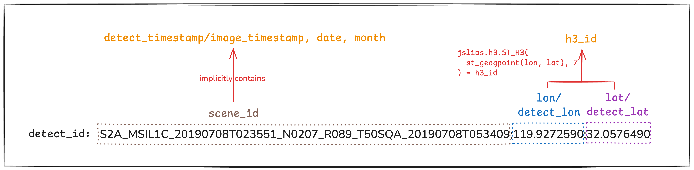
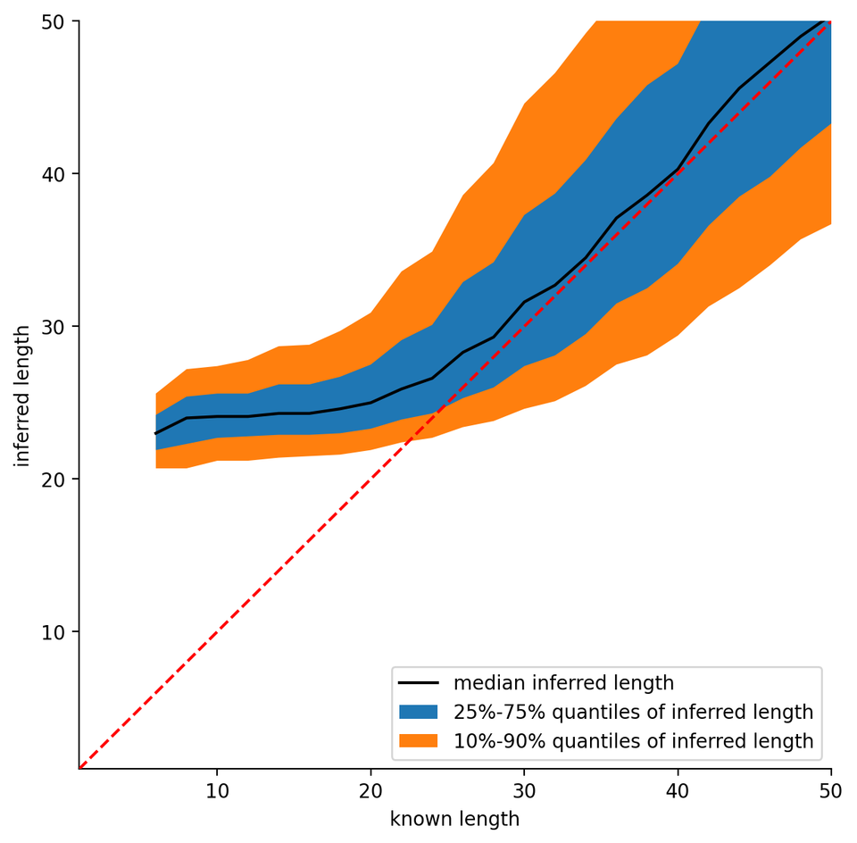
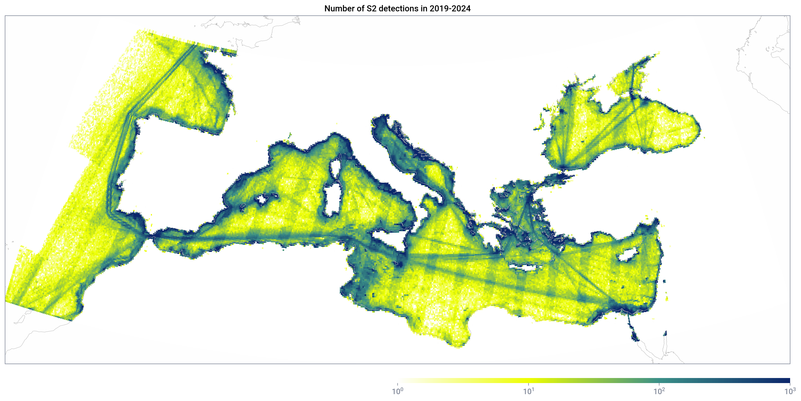
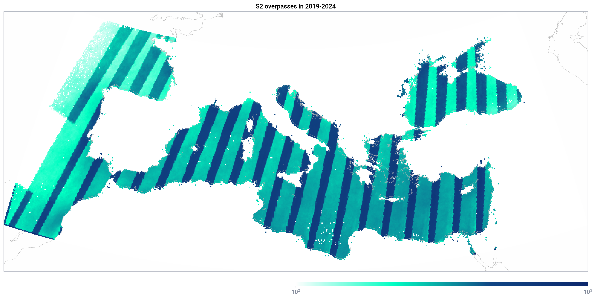
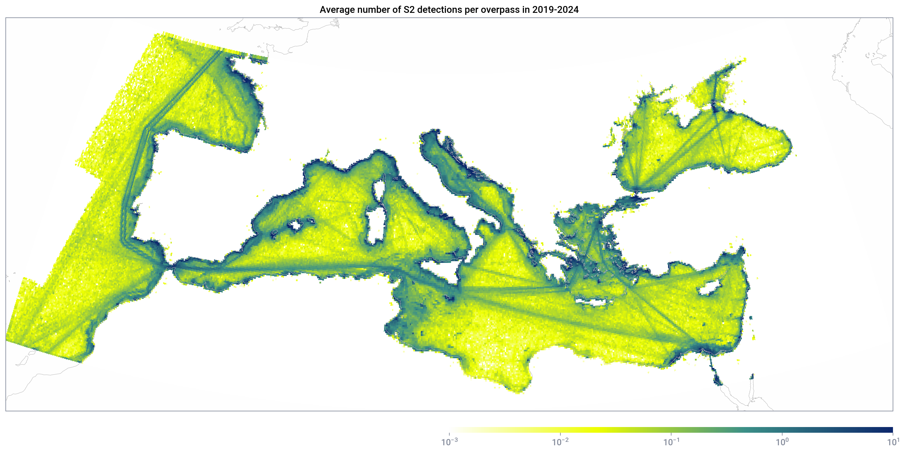
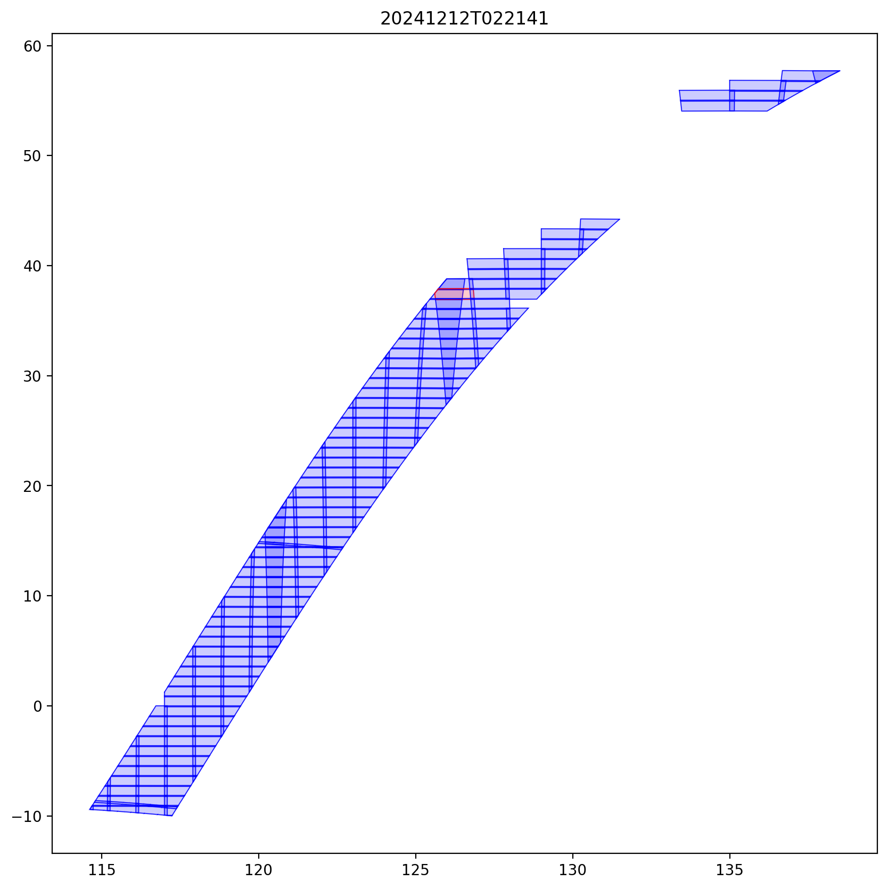

22 Sentinel-2 Vessel Detections
This document provides the guidelines for properly using the published Sentinel-2 vessel detections, some examples of use cases, and some data caveats. This document is based on tables in the global-fishing-watch.pipe_sentinel2_v1_published dataset in BigQuery and is thus suitable for GFW internal users and research partners with access to the dataset. For other types of users, refer to the documentation in the Data Download Portal page.
23 About Sentinel-2 vessel detections
Sentinel-2 images are taken globally by satellites in the Copernicus Sentinel-2 mission of the European Space Agency (ESA), mostly covering coastal regions with a 5-day revisit frequency. The image resolution is 10 meters. The satellites operate in a sun-synchronous orbit, which means they always revisit the same area around at same time (around Mean Local Solar Time of 10:30 am). Our vessel detection model uses the RGB and Near Infra-Red bands of the imagery. Currently the data in global-fishing-watch.pipe_sentinel2_v1_published ranges from 2019-01-01 to present, and will be backfilled to 2017 in the near future.
24 Table overview
(Please refer to the column descriptions in BigQuery for explanations of individual fields)
24.1 Description of tables
detect_scene_match_pipe_v3: The “clean” table that contains all the detections except the identified duplicates (read more), their inferred properties like vessel length and speed, their matching results with AIS data, and other context or inferred properties that can be useful for further data filtering (read more).Key fields to join other tables:
detect_id,scene_id,(detect_lat, detect_lon),detect_timestamp,datedetect_foot_raw: This table stores the footprint geometries of individual Sentinel-2 scenes downloaded from the Google Cloud Storage public datasets.Key fields to join other tables:
scene_id,image_timestamp(equivalent todetect_timestampindetect_scene_match_pipe_v3),datedetect_scene_raw: This table stores all the raw Sentinel-2 vessel detections and their inferred properties like vessel length and speed without any filters applied.Key fields to join other tables:
detect_id,scene_id,(lat, lon)(equivalent to(detect_lat, detect_lon)indetect_scene_match_pipe_v3),datefishing_classification: This table stores the results of the secondary classifier applied to the 1km2 thumbnails of individual detections. The classification results provide the scores representing the likelihood of each detection being a fishing vessel, a non-fishing vessel, and a non-vessel noise. Currently, only the scores of non-vessel noise are published with the release. The fishing/non-fishing scores are only available internally.Key fields to join other tables:
detect_id,dateaux_rasters_h3_7: This table stores the imaging conditions of each Sentinel-2 scene at the resolution of level-7 H3 cells, including the cloudiness, sun angles, and satellite view angles.Key fields to join other tables:
scene_id,h3_id,dates2_overpass: This table contains the monthly summary of Sentinel-2 satellite overpass and properties like average cloudiness at level-7 H3 cells. It helps understanding the coverage and effective revisit frequency at both global and regional scales. It is also useful for analyzing the detection data, such as calculating the mean vessel density at each satellite overpass (read more).Key fields to join other tables:
h3_id,month
All the tables are partitioned daily by the date field, except s2_overpass which is a monthly summary and partitioned by the month field.
24.2 Understanding the key fields to correctly join the tables
The figure below illustrates the structure of and relationship between different key fields shared by the tables. Understanding how they are connected is the key to correctly join these table for any analysis.

The two rules for joining two tables are:
- All the key fields they share need to match.
- If key field A explicitly or implicitly contains key field B, then B can be neglected in joining.
For example:
detect_scene_match_pipe_v3anddetect_foot_rawsharescene_id,image_timestamp/image_timestamp, anddate. However,scene_idimplicitly contains the other fields, so we only need to join them onscene_id.detect_scene_match_pipe_v3andaux_rasters_h3_7sharescene_id,date, and(detect_lat, detect_lon)↔︎h3_id, so we need to join them ondetect_scene_match_pipe_v3.scene_id = aux_rasters_h3_7.scene_id AND jslibs.h3.ST_H3(st_geogpoint(detect_lon, detect_lat),7) = h3_id
25 Data filtering/cleaning
25.1 Noise removal
For most use cases, additional data filtering and cleaning is required. The filter for getting rid of likely non-vessel noises from detect_scene_match_pipe_v3, which is used for displaying detections on GFW Map, is
other_score_nn < 0.2 -- likely non-vessel according to the secondary classifier
AND NOT potential_ice -- in a region and time with significant sea ice presence
AND NOT likely_infrastructure -- spatially very close to known infrastructuresObviously, none of these filters are perfect - they will likely remove some real vessels and miss some noises.
If you want to get a very clean set of detections and doesn’t care much about its completeness (e.g., to plot a pretty map), you can apply some additional filters explained below to further clean up the data.
Sentinel-2 images are affected by cloud, which both hides vessels underneath and creates false positives (small pieces of cloud can be detected as vessels). Therefore, one way to clean up the data is to filter out detections from cloudy parts of the images, e.g.,
cloud_score < 0.05 -- the level-7 h3 cell of the detection has < 5% cloud coverOne way to further remove noises missed by the other_score_nn filter is to use the inferred vessel speed. While the Sentinel-2 detector can pick lots of vessel-like noises like white caps, near-shore structures, and rocks, most of these noises don’t appear to be moving with visible wakes. Therefore, if a detection is predicted to have substantial speed, it’s likely showing some signature of movement and thus likely a real vessel. Filtering the inferred speed is thus an effective way of reducing false positives, e.g.,
speed_kn_inferred > 2 -- inferred speed > 2 knots25.2 Fishing/non-fishing classification
For the 1km2 thumbnails of each individual detection, a secondary classifier is applied to classify the detection as fishing, nonfishing, or other. Each class is assigned with a score, and the scores of the three classes sum to 1. The classification results are stored in table fishing_classification. You can join the table with detect_scene_match_pipe_v3 using detect_id. The other_score_nn in detect_scene_match_pipe_v3 is equivalent to other in fishing_classification.
As discussed above, we typically use other_score_nn<0.2 as a noise filter. Therefore, to get detections of likely fishing vessels, you can use
other < 0.2 AND fishing > nonfishingin addition to any other noise filters mentioned above. You can also use stricter filters to get more confident results, e.g., fishing > 0.9.
Again, please note that the current classification results are preliminary and there is ongoing improvement work for the classifier.
25.3 Caveats of inferred properties
Our S2 vessel detections provide inferred vessel length (length_m_inferred), speed (speed_kn_inferred), and heading direction (heading_deg_inferred). While they can be very useful for various analysis, it is important to keep in mind their limitations.
The inferred vessel length is less accurate for smaller vessels, and the length of under-30m vessels are likely overestimated, as shown in the figure below. This limitation is the result of the 10-m image resolution, with which small vessels appear as just dots, making it difficult to infer accurate vessel lengths.

The inferred vessel speed shouldn’t be used an accurate measurement like the speed reported in the AIS data. The inferred speed is only a rough estimation based on what appear in the image, such as wakes. It’s probably good enough to tell whether a vessel is stationary, moving slowly, or moving fast, but certain not capable of telling for sure whether its speed is 2.6 knots or 3.7 knots.
The inferred heading direction has two major limitations. Small vessels without moving signatures appear as just dots and are thus difficult to infer heading directions. For larger vessels without moving signatures, it’s difficult to tell which end is the head. As a result, the inferred heading direction may be wrong by ~180 degrees.
26 Data normalization
If you just want to thoroughly review what were detected in a region in a given time, you can simply query the detect_scene_match_pipe_v3 table and inspect the individual detections. However, if your analysis requires any higher-level summary, the key to correctly interpret the amount of detections is to consider the spatiotemporally varied satellite overpass. Because of this heterogeneity, normalizing the detections is necessary when the answering questions that involve vessel density - e.g., in some given season, on average how many vessels operate in a given region? Does place A have higher average vessel density than place B?
To normalize the data, join the detect_scene_match_pipe_v3 table with the s2_overpass table and aggregate the results to desired spatiotemporally resolution. Below are two examples.
26.0.1 Example: Gridded vessel density plot
In this example, we illustrate the importance of normalizing the data by comparing the naive count of detections during 2019-2024 in the Mediterranean Sea with the normalized vessel density.
WITH
overpass_agg AS (
SELECT
h3_id,
SUM(overpasses_cloud_under_20) overpasses_cloud_under_20
FROM
`global-fishing-watch.pipe_sentinel2_v1_published.s2_overpass`
WHERE
month BETWEEN DATE_TRUNC(DATE("2019-01-01"), MONTH) AND DATE_TRUNC(DATE("2024-12-31"), MONTH)
GROUP BY
h3_id
),
valid_detections AS (
SELECT
a.detect_lat,
a.detect_lon,
b.overpasses_cloud_under_20
FROM
`global-fishing-watch.pipe_sentinel2_v1_published.detect_scene_match_pipe_v3` a
JOIN
overpass_agg b
ON
jslibs.h3.ST_H3(st_geogpoint(a.detect_lon, a.detect_lat),7) = b.h3_id
WHERE
a.date BETWEEN "2019-01-01" AND "2024-12-31"
AND a.other_score_nn < .2
AND a.cloud_score < 0.2
AND NOT (
a.potential_ice
OR a.likely_infrastructure)
AND a.detect_lat BETWEEN 29.209582 AND 48.810822
AND a.detect_lon BETWEEN -15.570005 AND 44.638063
)
SELECT
FLOOR(detect_lat*10) AS lat_index,
FLOOR(detect_lon*10) AS lon_index,
AVG(overpasses_cloud_under_20) AS overpasses_cloud_under_20,
COUNT(*) AS detections_count,
SUM(1/overpasses_cloud_under_20) AS vessels_per_overpass,
FROM
valid_detections
GROUP BY
lat_index, lon_indexIf we plot detections_count from the query results, which is the naive count of detections, we get:

Note the vertical bands on the map, which is clearly not the pattern of vessel presence. Instead, it is caused by the different number satellite overpasses (overpasses_cloud_under_20) in different region:

The correct way to visualize the vessel presence is to plot vessels_per_overpass, which is the number of detections normalized by the number of overpasses:

27 Detection-AIS matching
The detect_scene_match_pipe_v3 table stores the results of matching each detection with AIS (based on ssvid). For each detection, its “best” AIS match is reported. Keep in mind that these “best” matches may not be the correct matches. Non-broadcasting vessels detected by S2 can be matched to AIS data from other undeteced vessels. Filtering the matching results is necessary.
The quality of the detection-AIS matching is represented by three metrics in the table:
matching_score: The primary metric of the matching quality. Higher values indicates better match. Compared with our Sentinel-1 product, this is an improved matching score that incorporates the discrepancy between the inferred and AIS vessel length - large discrepancy lowers the matching score by orders of magnitude.matching_score_secondary: The secondary matching score calculated for a fraction of detections to fix a known issue of the primary matching algorithm. This is also an improvement to the old matching method used for our Sentinel-1 product.matching_confidence: It is the confidence that this specific AIS vessel is the best match for the detection (e.g., if there are multiple AIS vessels with similar matching scores, then the confidence would be low even if the score is high)
Because of the highly varied AIS ping rates and the fact that AIS messages don’t coincide with satellite imaging time, deterministic detection-AIS matching is unfeasible, and there is not a single correct threshold for these metrics. Instead, the choices of the thresholds should be based on the purpose of the analysis.
For example, when displaying detections on GFW Map, we want reliable detection-AIS matches, so that when users display AIS tracks and detections together the results look reasonable. The corresponding filter for this purpose is
matching_score > 1E-3 OR IFNULL(matching_score_secondary, 0) > 0.05The thresholds are fairly high that almost guarantee correct matches based on numerous manual reviews of the matching results. For some use cases such as creating training data, we have used even higher threshold and limited matching_confidence to above 0.95 in order to get the absolutely correct matches. On the other hand, if the purpose is to find out vessels that are definitely not on AIS, lower thresholds should be used, such as
matching_score < 1E-5 AND IFNULL(matching_score_secondary, 0) < 1E-3Matching scores in between the upper and lower bounds should be regarded as “potential match”. One (complicated and expensive) way to find a “balanced” threshold is to
- calculate the probability of each AIS vessel being detected in each satellite scenes,
- calculate the expected number of detection-AIS matches based on the sum of probability
- and find the threshold such that the actual matches = the expected matches.
The method is explained in more detail in the SAR and AIS integration section of our SAR paper. The same method will be applied to our Sentinel-2 data in the near future.
28 Appendix
28.1 Duplicate detections
Neighboring Sentinel-2 scenes overlap with each other, as shown by the figure below. As a result, vessels in the overlapping area got imaged twice or more in a short period of time (mostly a few seconds). Currently, our pipeline processes all the Sentinel-2 images without pre-cropping them to account for the overlapping parts. Therefore, the raw vessel detections (detect_scene_raw) contains essentially duplicate detections of the same vessel with different scene_id and probably slightly different inferred values.

In the data processing pipeline, we identify these duplicates by clustering spatially close detections with similar inferred length, speed, and heading directions under each satellite overpass swath. In each cluster, we only keep one detection and flag the others as duplicates.
With this method, we have effectively removed most of the duplicates in the final product. However, it is never perfect and it’s certainly possible to come across duplicates that slipped through.